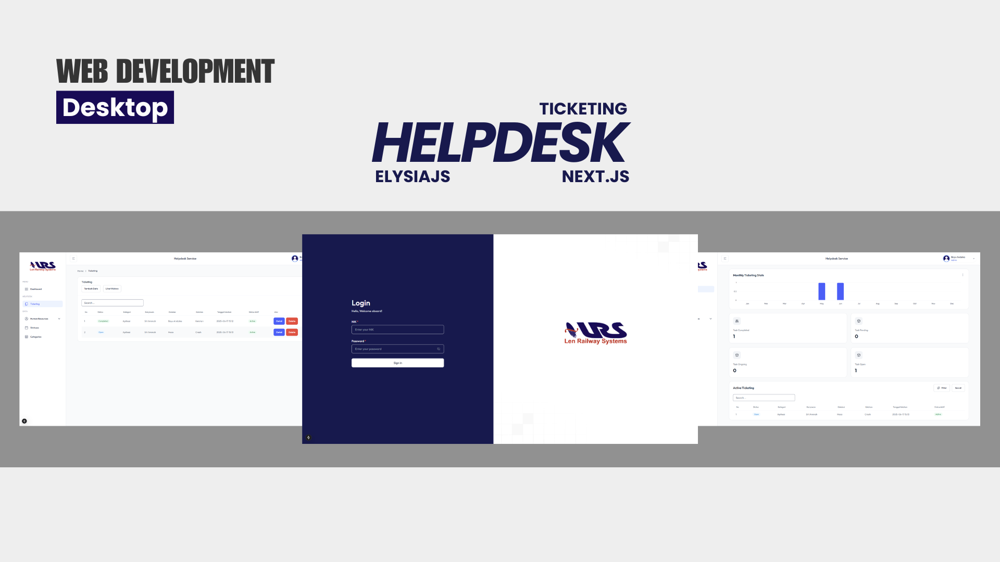

1. Helpdesk Ticketing System
Sistem helpdesk untuk mempermudah perusahaan mengelola tiket masalah. Dibangun dengan ElysiaJS (Bun) sebagai backend API dan Next.js sebagai frontend interaktif.
Profil Github : arkaadino
Sistem helpdesk untuk mempermudah perusahaan mengelola tiket masalah. Dibangun dengan ElysiaJS (Bun) sebagai backend API dan Next.js sebagai frontend interaktif.
Aplikasi kasir berbasis Laravel dengan fitur CRUD: manajemen produk, stok, pelanggan, dan transaksi penjualan otomatis. Sistem ini juga mendukung cetak struk dan laporan keuangan.